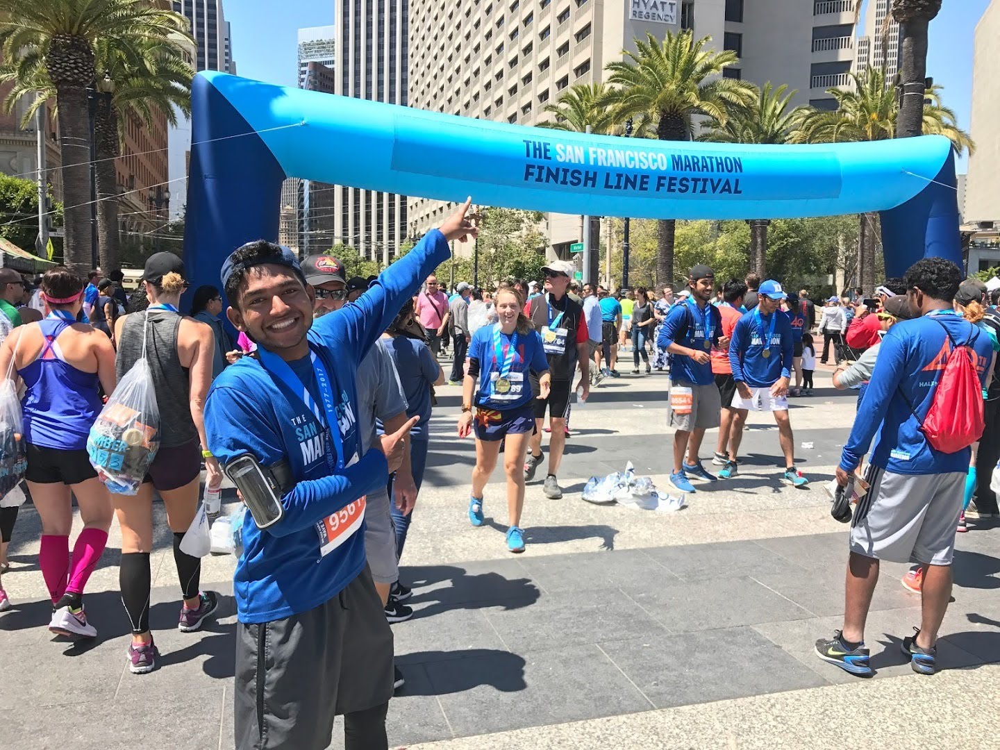

Sony Theakanath is a programmer, entrepeneur, and lecturer. In 2008, Sony started developing iOS apps, being one of first iOS developers and amassing 1 million total downloads across all his apps. He released Upgur in 2012, an image compression sharing photo application. It became one of the primary forms of sharing media in the Arab Spring crisis in 2012 and reached #3 on the App Store in several countries.

Afterwards, Sony worked at UCSC, developing an algorithm that extended star spectroscopy to farther distances, allowing researchers to analyze farther galaxies. The findings were published in Harvard University/Smithsonian Journal and The Astrophysical Journal.
In 2013, he joined Yahoo, focusing on ad targeting using machine learning techniques on mobile devices. In 2014, he helped develop Omlet Chat, an IoT bridge to mobile. The application was featured on The Economist, Forbes, Time and amassed more than 1 million downloads. Shortly thereafter, he authored Guerilla iPhone App Developement (Fresh Books, 2014).
In 2015, Sony joined Apple, focusing on building a privacy focused ad targeting system without releasing user information to advertisers. He moved to the Special Projects Team building the next generation Apple product line.
In 2017, Sony is the Founder and CEO of Asaii, an automated machine learning A&R platform serving record labels, Fortune 500, booking and promoting agencies, and marketing/PR.
Experience
Founder & CEO
2017 - Present
Asaii is an automated machine learning lead generation A&R platform serving record labels, Fortune 500, booking and promoting agencies. I built the founding team, coded the backend infastructure and algorithms, and develop partnerships with customers and vendors. The platform is used by several record labels, amassing a reach of 100 million people.
Software & Product Engineering
2015 - 2017
Product manager and engineer in Core OS, Apple Music, iAd, and Special Projects teams. Led a team to release iAd Tester for ad agencies, and led the project to deliver privacy focused ads on iOS devices. Later worked on the Special Projects Team building the next generation Apple product using machine learning and computer vision techniques. Work has been patented.
Lecturer
2015 - 2016
Instructor of the Introduction to iOS Development course at Berkeley. I managed a staff of 10 TAs and lecture to ~100 students every semester. The course became a full time and internship pipeline to Apple, Google, and Facebook for Berkeley students.
Software Engineer
2014 - 2014
Helped develop the iOS platform of Omlet Chat, a mobile app introduced to be the bridge between IoTs and Mobile. Featured on The Economist, Forbes, Time, and TechCrunch with over 1+ million downloads.
Mobile Researcher
2013 - 2014
Worked in the Yahoo Labs team, experimenting improving mobile ad targeting using machine learning techniques. The research was then used in Yahoo's main website to improve ad targeting for youth, giving an increase of 10% mobile ad revenue.
Astrophysics Research Intern
2012 - 2013
Developed an algorithm using Python to extend star spectroscopy to farther distances, allowing researchers to analyze farther galaxies, thereby allowing previously impossible astrophysics research to be conducted. This discovered that dwarf-dwarf cannibalisms are possible, when researchers previously thought it was impossible. These findings were published in Harvard University/Smithsonian Journal and The Astrophysical Journal.
Education
Computer Science
2014 - 2016
Publications + Patents
The Astrophysical Journal
June 8, 2016
Harvard University and Smithsonian Museum
January 2014
Fresh Books Inc
November 2013
Selected Awards
App Developed Reached 3rd Place on Apple App Store
Apple Inc
Intel Science Talent Search Research Award
Intel Corporation
Siemens Research Competition Semifinalist
Siemens Corporation
USACO Silver Division Competitor
United States Computing Olympiad
President's Award for Educational Excellence
U.S. Department of Education
Speaking
Austin, Texas
March 9-18, 2018
In the panel "Measuring What Matters in a Playlists-First World" discussing how Asaii uses data techniques to deliver actionable results.
New York, New York
January 23-24, 2018
Speaking about how Asaii's machine learning algorithms can help A&R, promoters, and marketers to find talent faster than before in the data centric age of music.
London, United Kingdom
October 11, 2017
Speaking about how Asaii's Asaii Score is broken down and how it can turbocharge A&R in record labels.
Washington D.C.
January 5-9, 2014
Discussed how computer science vision techniques were used to view farther galaxies with more constructive data.
Teaching
Spring 2016
Spring 2016
Fall 2015
Summer 2014
Fall 2012 to Spring 2014
Skills